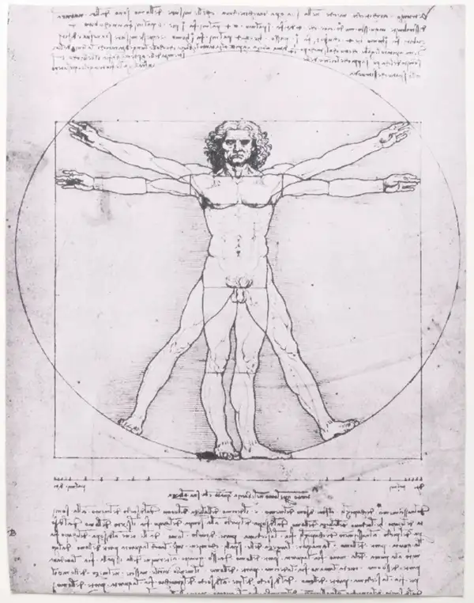
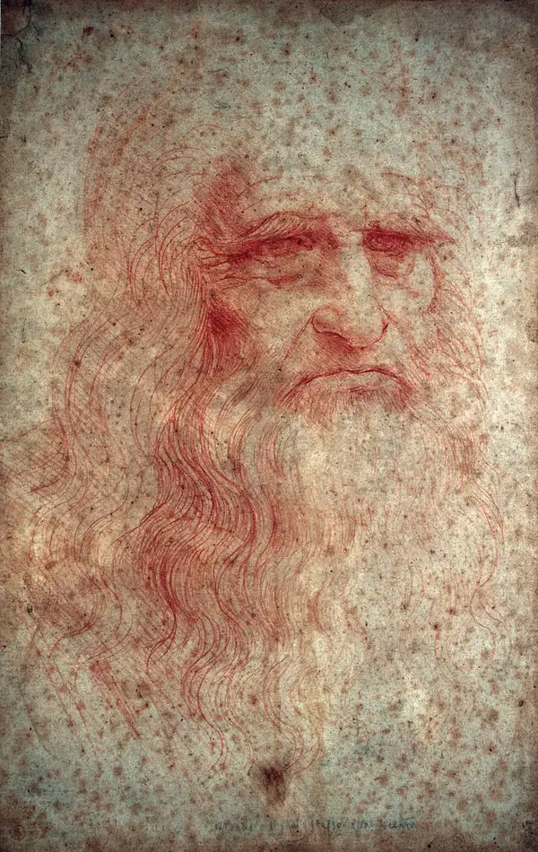
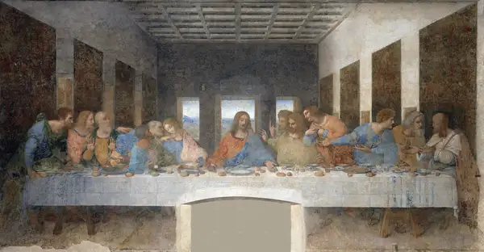

Mona Lisa
1503-1519
Mona Lisa is an oil painting on a poplar wood panel by Leonardo
da Vinci, probably the world’s most famous painting. It was
painted sometime between 1503 and 1519, when Leonardo was living
in Florence, and it now hangs in the Louvre Museum, Paris, where
it remained an object of pilgrimage in the 21st century. The
sitter’s mysterious smile and her unproven identity have made
the painting a source of ongoing investigation and fascination.

Last Supper
1495-1498
Last Supper, one of the most famous artworks in the world,
painted for the Dominican monastery Santa Maria delle Grazie in
Milan. It depicts the dramatic scene described in several
closely connected moments in the Gospels. According to
Leonardo’s belief that posture, gesture, and expression should
manifest the “notions of the mind,” each one of the 12 disciples
reacts in a manner that Leonardo considered fit for that man’s
personality. The result is a complex study of varied human
emotion, rendered in a deceptively simple composition.

Salvator Mundi
1500
This painting depicts Christ as the Savior of the World. He is
shown in Renaissance dress, with two fingers extended as he
gives a benediction. In his left hand, he holds a crystal orb,
which represents the crystalline sphere of the heavens. Salvator
Mundi became the most expensive work of art ever sold when it
was auctioned at Christie’s, New York, on November 15, 2017, for
$450.3 million. The unprecedented sum for a heavily restored
painting with questionable attribution made the Salvator Mundi,
arguably, the most controversial painting of the 21st century.

Self Portrait
1490 / 1515-1516
Long regarded as a self-portrait, the red chalk drawing of an
old man with long wavy hair and a beard has been reproduced to
such an extent that it defines how most people think of
Leonardo’s appearance. Yet some scholars argue that the figure,
with its craggy features, furrowed brow, and downcast eyes,
appears much older than the age Leonardo ever reached; Leonardo
died at age 67. Whomever the portrait represents, it is a
departure from Leonardo’s often captivating subjects, yet he
managed to imbue the figure with the nobility and wisdom of a
mature age.

Vitruvian Man
1490
Vitruvian Man, also called a study of the proportions of the
human body, is a drawing in metalpoint, pen and ink, and
watercolour on paper. It depicts a nude male figure with the
arms and legs in two superimposed positions so that the hands
and feet touch the perimeters of both a square and a circle. One
of Leonardo’s best-known works, the drawing has become an iconic
image, often reproduced in art, science, and commerce.

Leonardo Da Vinci
1452-1519
Da Vinci was born in Anchiano, Tuscany (now Italy), in 1452, close to the town of Vinci that provided the surname we associate with him today. In his own time he was known just as Leonardo or as “Il Florentine,” since he lived near Florence—and was famed as an artist, inventor and thinker